Integrala definită
Diviziuni ale unui interval
Fie intervalul închis și mărginit format din numere reale și notat astfel ![[ a,b ]](../media/webbooks/404/2692/images/equations/9q6iyn9dchmtbsmzanqfxq==.gif) .
.
Definiția CI15: Diviziunea și elementele sale
Un sistem finit de puncte, notat cu , astfel încât se numește diviziune a intervalului .
Punctele se numesc puncte de diviziune sau nodurile diviziunii  , iar intervalele se numesc intervale de diviziune.
, iar intervalele se numesc intervale de diviziune.
Definiția CI16: Sistem de puncte intermediare
Se numește sistem de puncte intermediare asociat diviziunii sistemul de puncte notat cu cu .
Exemplu:
Fie intervalul ![\left [ 0,2 \right ]](../media/webbooks/404/2692/images/equations/-5suykx2v03ooiyu28t8xa==.gif) .
.
Sistemele finite de puncte sunt diviziuni ale intervalului .
Sistemele și sunt sisteme de puncte intermediare asociate diviziunilor , respectiv diviziunii .
Observații:
- Diviziunile din exemplul dat, ca mulțimi de puncte, au proprietatea că .
- Dacă sunt două diviziuni ale intervalului
![\left [ a,b \right ]](../media/webbooks/404/2692/images/equations/d8te1mfmbckg5qjynvqxzw==.gif) și îndeplinesc condiția , atunci se spune că diviziunea este mai fină decât diviziunea . Pentru exemplul dat se poate spune că diviziunea este mai fină decât diviziunea iar diviziunea este mai fină decât diviziunea .
și îndeplinesc condiția , atunci se spune că diviziunea este mai fină decât diviziunea . Pentru exemplul dat se poate spune că diviziunea este mai fină decât diviziunea iar diviziunea este mai fină decât diviziunea .
Definiția CI17: Norma unei diviziuni
Fie o diviziune a intervalului .
Se numește norma diviziunii cea mai mare dintre lungimile intervalelor de diviziune .
Se notează cu
Exemplu:
Pentru exemplul dat mai sus, avem etc.
Observație:
Diviziunea a intervalului se numește diviziune echidistantă dacă toate intervalele de diviziune au aceeași lungime. Se notează cu
Sume Riemann
Fie obiectele matematice:
- intervalul închis și mărginit ;
- funcția
![f:\left [ a,b \right ]\to \mathbb{R}](../media/webbooks/404/2692/images/equations/puc7ryq-emo-el0jqiox6a==.gif) ;
; - diviziunea a intervalului ;
- sistemul de puncte intermediare asociat diviziunii .
Definiția CI8: Sumă Riemann
Se numește sumă Riemann (sau sumă integrală) asociată funcției  , diviziunii și sistemului de puncte intermediare
, diviziunii și sistemului de puncte intermediare  , numărul real
, numărul real
Exemple:
- Dacă avem funcția
![f:\left [ a,b \right ]\rightarrow \mathbb{R}, f(x)=c](../media/webbooks/404/2692/images/equations/mk3mzsgoww7ulwbix79ytw==.gif) , atunci orice sumă Riemann asociată acestei funcții este egală cu 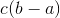.
, atunci orice sumă Riemann asociată acestei funcții este egală cu 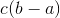. - Dacă avem funcția 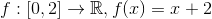, diviziunea și sistemul de puncte intermediare , atunci suma Riemann este:
![\begin{align*} \sigma _\Delta (f,\xi )&=\sum_{i=1}^{4}f(\xi _i)\cdot (x_i-x_{i-1})\\\\ &=f(0)\cdot \left ( \frac{1}{2}-0 \right )+f\left ( \frac{2}{3} \right )\cdot \left ( 1-\frac{1}{2} \right )+f(1)\cdot \left ( \frac{3}{2}-1 \right )+f\left ( \frac{7}{4} \right )\cdot \left ( 2-\frac{3}{2} \right )\\\\ &=(0+2)\cdot \frac{1}{2}+\left ( \frac{2}{3}+2 \right )\cdot \frac{1}{2}+(1+2)\cdot \frac{1}{2}+\left ( \frac{7}{4}+2 \right )\cdot \frac{1}{2}\\\\ &=\frac{2}{2}+\frac{7}{3}\cdot \frac{1}{2}+\frac{3}{2}+\frac{15}{4}\cdot \frac{1}{2}\\\\ &=1+\frac{7}{6}+\frac{3}{2}+\frac{15}{8}\\\\ &=\displaystyle\frac{24\cdot 1+4\cdot 7+12\cdot 3+15\cdot 3}{24}\\\\ &=\frac{24+28+36+45}{24}\\\\&=\frac{133}{24} \end{align*}](../media/webbooks/404/2692/images/equations/56xcwlrpvti3i9-e9ruq5a==.gif)
Integrabilitatea unei funcții pe un interval
Fie funcția continuă o diviziune a intervalului pe care funcția  este definită, iar un sistem de puncte intermediare asociat diviziunii .
este definită, iar un sistem de puncte intermediare asociat diviziunii .
Avem următoarea figură:

Definiția CI19: Subgraficul unei funcții
Se numește subgraficul funcției , mulțimea de puncte din plan delimitată de curba axa  și dreptele
și dreptele  , respectiv
, respectiv  .
.
Această mulțime se notează cu:
Pe graficul de mai sus, se observă că suma Riemann asociată funcției  diviziunii și sistemului de puncte intermediare reprezintă suma ariilor suprafețelor dreptunghiulare (hașurate cu gri), având baza și înălțimea cu .
diviziunii și sistemului de puncte intermediare reprezintă suma ariilor suprafețelor dreptunghiulare (hașurate cu gri), având baza și înălțimea cu .
Cu alte cuvinte, numărul realizează o aproximare a ariei subgraficului al funcției .
Integrabilitatea unei funcții pe un interval închis
Fie intervalul închis ![\begin{align*} \left [ a,b \right ] \end{align*}](../media/webbooks/404/2692/images/equations/jihzyknwuu7kmet-fz7_cw==.gif) , cu
, cu  și
și  .
.
Definiția CI20: Funcția integrabilă Riemann
Funcția se numește funcție integrabilă Riemann (sau, mai simplu, funcție integrabilă) pe intervalul închis , dacă există un număr real 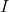 astfel încât pentru orice șir de diviziuni ale intervalului , notat cu având limita normei nulă și orice șir de puncte intermediare cu proprietatea că șirul de sume integrale corespunzător este convergent către .
Definiția CI21: ( Integrala definită )
Numărul real se numește integrala definită (integrala) funcției pe intervalul .
Se notează astfel și se citește „integrală de la  la
la  din
din  ”.
”.
Atunci, avem că
Definiția CI22: Elementele integralei definite
Simbolul se numește semnul de integrare ( sau semnul integralei ), numerele și se numesc limite ( sau capete de integrare ), unde  este limita de integrare inferioară, iar este limita de integrare superioară. Intervalul se numește interval de integrare. Funcția se numește funcția de integrat, iar
este limita de integrare inferioară, iar este limita de integrare superioară. Intervalul se numește interval de integrare. Funcția se numește funcția de integrat, iar  se numește variabila de integrare.
se numește variabila de integrare.
Observații:
- Variabila de integrare se poate nota cu orice literă, de exemplu putem avea: etc.
- Această variabilă de integrare este independentă de capetele de integrare, cu alte cuvinte este incorect să scriem sau
- Numărul
 este unic determinat, limita unui șir convergent de numere reale fiind unică.
este unic determinat, limita unui șir convergent de numere reale fiind unică. - Diferența dintre integrala nedefinită și integrala definită este aceea că integrala nedefinită a funcției pe intervalul este o mulțime de funcții (mulțimea primitivelor funcției pe intervalul ), pe când integrala definită a unei funcții integrabile pe un interval este un număr real.
Definiția CI23: Relații ale funcției integrabile
Dacă funcția ![f:\left [ a,b \right ]\rightarrow \mathbb{R}](../media/webbooks/404/2692/images/equations/ltajijolysvl8pqjld6e2q==.gif) este o funcție integrabilă, atunci, prin definiție avem că și
este o funcție integrabilă, atunci, prin definiție avem că și  dacă
dacă
Definiția CI24: Mărginirea funcției integrabile
Orice funcție integrabilă pe intervalul este mărginită, adică există astfel încât pentru orice ![x\in\left [ a,b \right ].](../media/webbooks/404/2692/images/equations/pbhhsgxvy_tldibbytbhmq==.gif)
Contrar, dacă funcția nu este mărginită, atunci funcția nu este integrabilă pe intervalul închis .
Exemple:
- Funcția continuă de gradul întâi este mărginită și are zero puncte de discontinuitate, de unde ne rezultă că funcția este integrabilă pe intervalul .
- Funcția este o funcție nemărginită, deoarece limita laterală la dreapta este:
0}}f(x) =\lim_{\substack{x\to 0 \\ x> 0}}\frac{1}{x}=+\infty .\end{align*}">
De aici ne rezultă că funcția nu este integrabilă pe intervalul închis .
Exemplu de funcție integrabilă:
Funcția constantă ![\begin{align*} f:\left [ a,b \right ]\rightarrow \mathbb{R}, f(x)=c \end{align*}](../media/webbooks/404/2692/images/equations/w5dj-9te6_1nkulqxmp_kq==.gif) este o funcție integrabilă pe intervalul pe care funcția este definită și avem
este o funcție integrabilă pe intervalul pe care funcția este definită și avem
Exemplu de funcție care nu este integrabilă:
Funcția lui Dirichlet este o funcție mărginită, dar nu este integrabilă pe intervalul ( sau pe orice interval de forma ![\begin{align*} \left [ a,b \right ]\subset \mathbb{R} \end{align*}](../media/webbooks/404/2692/images/equations/txuzl-2xpcoaeecglf6_wa==.gif) ), deoarece limitele laterale sunt diferite.
), deoarece limitele laterale sunt diferite.
Următorul rezultat ne arată cum se poate construi sau demonstra că o funcție este integrabilă dacă se pornește de la o funcție integrabilă cunoscută:
Teorema CI25:
Fie funcțiile ![\begin{align*} f,g:\left [ a,b \right ]\rightarrow \mathbb{R} \end{align*}](../media/webbooks/404/2692/images/equations/eqqvilnzw9p2cfyrgfsida==.gif) și mulțimea finită , astfel încât:
și mulțimea finită , astfel încât:
- funcția este o funcție integrabilă pe intervalul închis ;
 oricare ar fi
oricare ar fi
Atunci funcția  este integrabilă pe intervalul închis și avem următoarea egalitate:
este integrabilă pe intervalul închis și avem următoarea egalitate:
Exemplu:
Fie funcția . Să se analizeze integrabilitatea acestei funcții pe intervalul ![\begin{align*} \left [ 1,2 \right ] \end{align*}](../media/webbooks/404/2692/images/equations/2pytqlbm4kau1-odjdz46a==.gif) .
.
Fie atunci funcția oricare ar fi
Funcția  este integrabilă pe intervalul , deoarece este o funcție constantă și avem:
este integrabilă pe intervalul , deoarece este o funcție constantă și avem:
.
Observăm că funcția s-a obținut din funcția , punându-se în plus condiția ca , pentru  .
.
Conform Teoremei CI25 obținem că funcția este o funcție integrabilă pe intervalul și
Integrabilitatea funcțiilor continue
Conform Definiției CI24: Mărginirea funcției integrabile știm că orice funcție integrabilă pe un interval este funcție mărginită. Am văzut că reciproca acesteia este o propoziție falsă.
Dar dacă pornim de la funcții mărginite pe un interval închis de forma și adăugând condiții suplimentare, se pot obține funcții integrabile pe intervalul închis
Astfel, avem următorul rezultat (care reprezintă un caz particular al criteriului lui Lebesgue) :
Teorema CI26: Teorema lui Lebesgue
Fie funcția mărginită .
Dacă funcția are un număr finit de puncte de discontinuitate, atunci putem spune că funcția este o funcție integrabilă pe intervalul închis
Exercițiu rezolvat:
Să se arate că funcția este integrabilă pe domeniul său de definiție.
Rezolvare:
Studiem continuitatea funcției :
0}}f(x) \\\\ &=\lim_{\substack{x\to 0 \\ x> 0}}(3x^2-x+2)\\\\&=3\cdot 0^2-0+2\\\\&=0+2\\\\&=2 \end{align*}">
Cum , ne rezultă că funcția nu este continuă.
Studiem mărginirea funcției , construind următorul tabel:

Observăm că funcția este mărginită și are un singur punct de discontinuitate, , de unde, conform Teoremei CI26: ( Teorema lui Lebesgue ) ne rezultă că funcția este o funcție integrabilă.
Teorema CI27: Integrabilitatea funcțiilor continue
Orice funcție continuă de forma este o funcție integrabilă pe intervalul închis .
Exercițiu rezolvat:
Să se studieze dacă funcția este integrabilă pe intervalul închis .
Rezolvare:
Studiem continuitatea funcției :

Pentru a calcula această limită, am folosit limita remarcabilă , limită pe care o găsești accesând pagina Limitele funcțiilor elementare, din cadrul ghidului Limite de funcții.
Cum și limita laterală este  , ne rezultă că funcția este continuă. Atunci, conform Teoremei CI27: Integrabilitatea funcțiilor continue avem că funcția este integrabilă pe intervalul închis .
, ne rezultă că funcția este continuă. Atunci, conform Teoremei CI27: Integrabilitatea funcțiilor continue avem că funcția este integrabilă pe intervalul închis .
Formula lui Leibniz-Newton
Până acum, integrala definită s-a putut calcula folosind definiția integralei.
În cele ce urmează ți se va prezenta o teoremă care te va ajuta să calculezi mai ușor integrala definită pentru funcții integrabile pe un interval.
Teorema CI28: Formula lui Leibniz - Newton
Fie funcția o funcție integrabilă pe intervalul închis , care admite primitive pe acest interval.
Atunci, pentru orice primitivă  a funcției are loc următoarea egalitate:
a funcției are loc următoarea egalitate:
 numită formula lui Leibniz - Newton.
numită formula lui Leibniz - Newton.
Scrierea din formula lui Leibniz - Newton se înlocuiește frecvent cu relația 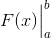 și se citește „ luat între 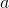 și  ”.
”.
Exerciții rezolvate:
- Să se calculeze următoarele integrale, folosind formula lui Leibniz - Newton:
Rezolvare:
Pentru a rezolva aceste exerciții, ne vom folosi de formule din tabelul de integrale nedefinite din secțiunea „Primitive uzuale” a acestui ghid:
- Calculăm
Funcția este o funcție continuă, fiind compusă din funcții elementare. Fiind continuă, putem spune că această funcție este integrabilă pe intervalul închis .
O primitivă a funcției este funcția
Atunci, conform formulei lui Leibniz - Newton, avem că:
- Calculăm
Funcția este o funcție integrabilă pe intervalul , deoarece este o funcție continuă, fiind compusă din funcții elementare.
Mulțimea primitivelor acestei funcții este:
Alegând primitiva 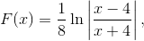 pe intervalul , ne rezultă că vom avea:
![\begin{align*} \int_{1}^{3} \displaystyle\frac{1}{x^2-16}\ \mathrm{dx} &=\left (\frac{1}{8}\ln\left | \frac{x-4}{x+4} \right | \right )\Big|_1^3\\\\ &=\frac{1}{8}\left ( \ln\left | \frac{3-4}{3+4} \right |-\ln\left | \frac{1-4}{1+4} \right | \right )\\\\ &=\frac{1}{8}\left ( \ln\left | \frac{-1}{7}\right | -\ln\left | \frac{-3}{5} \right | \right )\\\\ &=\frac{1}{8}\left [ \ln \left (\frac{1}{7} \right ) -\ln\left ( \frac{3}{5} \right ) \right ]\\\\ &=\frac{1}{8}\cdot \ln\left ( \frac{1}{7}:\frac{3}{5} \right )\\\\ &=\frac{1}{8}\cdot \ln\left ( \frac{1}{7}\cdot \frac{5}{3} \right )\\\\ &=\frac{1}{8}\cdot \ln\left ( \frac{5}{21} \right ) \end{align*}](../media/webbooks/404/2692/images/equations/cjtzmr-gyjacghyhdzt-jw==.gif)
- Calculăm
Fie funcția Această funcție este integrabilă pe domeniul de definiție al funcției , adică pe intervalul închis , deoarece funcția este o funcție continuă, fiind compusă din funcții elementare.
Mulțimea primitivelor funcției este:
Alegem primitiva
Atunci, pe intervalul închis , obținem că:
- Calculăm
Funcția este o funcție integrabilă pe intervalul , deoarece este o funcție continuă, fiind compusă din funcții elementare.
Mulțimea primitivelor acestei funcții este:
Fie primitiva 
Atunci, revenind la integrala dată, ne rezultă că:
- Să se verifice egalitățile:
Rezolvare:
Pentru a rezolva aceste exercițiu vom folosi formulele din cel de-al doilea tabel al secțiunii Primitive uzuale, din cadrul capitolului anterior, Primitive:
- Arătăm că
Fie funcția continuă . Fiind o funcție continuă (este compusă din funcții elementare), este o funcție integrabilă pe intervalul
Mulțimea primitivelor a acestei funcții este:
Fie o primitivă a acestei funcții de forma . Atunci avem:
- Calculăm
Fie funcția continuă . Fiind o funcție continuă (este compusă din funcții elementare), este o funcție integrabilă pe intervalul ![\begin{align*} \left [ 0,\sqrt{2} \right ] .\end{align*}](../media/webbooks/404/2692/images/equations/89zht2a-0iqt9mtkhz0ivg==.gif)
Mulțimea primitivelor acestei funcții este:
Fie o primitivă a acestei funcții de forma . Atunci avem:

Proprietăți ale integralei definite
Având în vedere definiția funcției integrabile pe un interval (Definiția CI20: Funcția integrabilă Riemann) și operațiile cu șiruri convergente, se pot deduce câteva proprietăți ale funcțiilor integrabile și ale integralei definite.
Astfel, avem următoarele proprietăți:
Proprietatea de liniaritate a integralei
Teorema CI29: Liniaritatea integralei
Fie funcțiile ![f,g:\left [ a,b \right ]\rightarrow \mathbb{R}](../media/webbooks/404/2692/images/equations/phflslg1myqwmuitf4ukiq==.gif) două funcții integrabile pe intervalul închis și scalarul
două funcții integrabile pe intervalul închis și scalarul
Atunci avem următoarele proprietăți:
- Funcția sumă, notată
 , este integrabilă pe intervalul închis și are loc relația: adică integrala sumei este egală cu suma integralelor.
, este integrabilă pe intervalul închis și are loc relația: adică integrala sumei este egală cu suma integralelor. - Funcția este o funcție integrabilă pe intervalul închis și avem relația: adică constanta iese în fața integralei.
Observație:
Combinând cele două proprietăți, pentru funcția sumă  , cu
, cu  , obținem:
, obținem:
Exerciții rezolvate:
- Să se calculeze următoarea integrală
Rezolvare:
Pentru a rezolva acest exercițiu folosim simultan cele două proprietăți de mai sus (conform observației).
Calculăm 
![\begin{align*} \int_{1}^{2} (5x^2-3x+2)\ \mathrm{dx}&=5\int_{1}^{2}x^2\ \mathrm{dx}-3\int_{1}^{2}x\ \mathrm{dx}+2\int_{1}^{2}1\ \mathrm{dx}\\ \\&=5\cdot \frac{x^3}{3}\Big|_1^2-3\cdot \frac{x^2}{2}\Big|_1^2+2\cdot x\Big|_1^2\\\\ &=5\left ( \frac{2^4}{3}-\frac{1^4}{3} \right )-3\left ( \frac{2^2}{2}-\frac{1^2}{2} \right )+2\left ( 2-1 \right )\\\\ &=5\cdot \frac{16-1}{3}-3\cdot \frac{4-1}{2}+2\cdot 1\\\\ &= \frac{5\cdot 15}{3}-\frac{3\cdot 3}{2}+2\\\\ &=25-\frac{9}{2}+2\\\\ &=27-\frac{9}{2}\\\\ &=\frac{27\cdot 2-9}{2}\\\\ &=\frac{54-9}{2}\\\\&=\frac{45}{2} \end{align*}](../media/webbooks/404/2692/images/equations/eky37cx5havxem13_rp_pq==.gif)
- Să se determine , astfel încât
Rezolvare:
Calculăm
Am obținut că 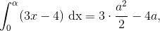 dar de unde ne rezultă că:
Rezolvăm ecuația obținută, înmulțind-o cu  , pentru a scăpa de fracții.
, pentru a scăpa de fracții.
Avem:
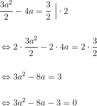
Am obținut că integrala are loc pentru
Proprietatea de aditivitate la interval a integralei
Teorema CI30: Aditivitatea la interval a integralei
Fie funcția ![\begin{align*} f:\left [ a,b \right ]\rightarrow \mathbb{R} \end{align*}](../media/webbooks/404/2692/images/equations/-omy0cxmrmbzi7fvnqetta==.gif) și
și
Dacă funcția este integrabilă pe intervalele și atunci funcția este integrabilă pe intervalul și are loc următoarea egalitate:
Exercițiu rezolvat:
Fie funcția . Să se arate că această funcție este integrabilă pe intervalul și să se calculeze 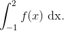
Rezolvare:
- Integrabilitatea funcției
Calculăm limitele latereale ale funcției :
1}}f(x) \\\\&=\lim_{\substack{x\to 1 \\ x< 1}}(-3x^2+1)\\\\&=-3\cdot 1^2+1\\\\&=-3+1\\\\&=-2 \end{align*}">
Observăm că limitele laterale ale funcției nu sunt egale, de unde ne rezultă că funcția nu este continuă pe intervalul , dar funcția este mărginită pe și are un singur punct de discontinuitate, , iar conform Teoremei CI26: Teorema lui Lebesgue, avem că funcția este integrabilă pe intervalul închis .
- Calcularea integralei
Conform Teoremei CI30: Aditivitatea la interval a integralei avem:
![\begin{align*} \int_{-1}^{2}f(x)\ \mathrm{dx}&=\int_{-1}^{1}f(x)\ \mathrm{dx}+\int_{1}^{2}f(x)\ \mathrm{dx}\\\\ &=\int_{-1}^{1}(2x+3)\ \mathrm{dx}+\int_{1}^{2}(-3x^2+1)\ \mathrm{dx}\\\\ &=2\int_{-1}^{1}x\ \mathrm{dx}+3\int_{-1}^{1}1\ \mathrm{dx}-3\int_{1}^{2}x^2\ \mathrm{dx}+\int_{1}^{2}1\ \mathrm{dx}\\\\ &=2\cdot \frac{x^2}{2}\Big|_{-1}^1+3\cdot x\Big|_{-1}^1-3\cdot \frac{x^3}{3}\Big|_{1}^2+x\Big|_{1}^2\\\\ &=2\left ( \frac{1^2}{2}-\frac{(-1)^2}{2} \right )+3\left [ 1-(-1) \right ]-3\left ( \frac{2^3}{3}-\frac{1^3}{3} \right )+(2-1)\\\\ &=2\left ( \frac{1}{2}-\frac{1}{2} \right )+3\left ( 1+1 \right )-3\left ( \frac{8}{3}-\frac{1}{3} \right )+1\\\\ &=2\cdot 0+3\cdot 2-3\cdot \frac{7}{3}+1\\\\ &=0+6-7+1\\\\ &=0 \end{align*}](../media/webbooks/404/2692/images/equations/kdicm3ekzk_zlq_s0ru2_q==.gif)
Proprietatea de monotonie a integralei
Teorema CI31: Monotonia integralei
Fie funcțiile două funcții integrabile pe intervalul ![\begin{align*}\left [ a,b \right ]\end{align*}](../media/webbooks/404/2692/images/equations/sjnixuocjcjqduiqh1_wba==.gif) .
.
- Dacă funcția oricare ar fi
![\begin{align*}x\in\left [ a,b \right ]\end{align*}](../media/webbooks/404/2692/images/equations/yvdzbktx-wcevi3hvp5q9a==.gif) , atunci ( pozitivitatea integralei ).
, atunci ( pozitivitatea integralei ). - Dacă
 pentru orice , atunci ( monotonia integralei ).
pentru orice , atunci ( monotonia integralei ).
Exercițiu rezolvat:
Folosind proprietatea de monotonie a integralei, să se arate că:
Rezolvare:
Fie funcțiile , și
Arătăm că oricare ar fi ![\begin{align*} x\in\left [ 0,e-1 \right ] \end{align*}](../media/webbooks/404/2692/images/equations/bsqj7einj736lnnvnbd_bq==.gif) .
.
Avem:
Notăm cu și arătăm că oricare ar fi .
Pentru a arăta acest lucru, studiem funcția cu ajutorul derivatei întâi. Atunci:
Avem următorul tabel:

Observăm că , de unde avem că pentru orice . În acest caz, funcția  este descrescătoare pe intervalul și avem relația
este descrescătoare pe intervalul și avem relația
Atunci oricare ar fi .
Ne rezultă că:
Consecința CI32: Proprietatea de medie a integralei
Fie funcția o funcție integrabilă pe intervalul și astfel încât oricare ar fi
Atunci avem relația:
Exercițiu rezolvat:
Fără a calcula integrala, să se arate că:
Rezolvare:
Fie funcția
Studiem această funcție cu ajutorul derivatei de ordinul întâi:
![\begin{align*} {f}'(x)&={\left (\sqrt{\frac{x-3}{x-1}} \right )}'\\\\&=\frac{1}{2\sqrt{\displaystyle\frac{x-3}{x-1}}}\cdot {\left ( \frac{x-3}{x-1} \right )}'\\\\ &=\frac{1}{2\sqrt{\displaystyle\frac{x-3}{x-1}}}\cdot\displaystyle\frac{{(x-3)}'(x-1)-(x-3){(x-1)}'}{(x-1)^2}\\\\ &=\frac{1}{2\sqrt{\displaystyle\frac{x-3}{x-1}}}\cdot\displaystyle\frac{1\cdot (x-1)-(x-3)\cdot 1}{(x-1)^2}\\\\ &=\frac{1}{2\sqrt{\displaystyle\frac{x-3}{x-1}}}\cdot\displaystyle\frac{x-1-x+3}{(x-1)^2}\\\\ &=\frac{1}{2\sqrt{\displaystyle\frac{x-3}{x-1}}}\cdot\displaystyle\frac{2}{(x-1)^2}\\\\ &=\frac{1}{\sqrt{\displaystyle\frac{x-3}{x-1}}}\cdot\displaystyle\frac{1}{(x-1)^2}\\ \end{align*}](../media/webbooks/404/2692/images/equations/jp7wtdmbwcg7io_if_nw3g==.gif)
0 \end{align*}">.
De aici ne rezultă că funcția este strict crescătoare pe intervaul
Calculăm valorile funcției în extremitățile intervalului:
Avem următorul tabel:

Fie și . Atunci, conform Consecinței CI32: Proprietatea de medie a integralei avem:
Consecința CI33: Modulul integralei
Fie funcția o funcție continuă.
Atunci funcția este o funcție integrabilă pe intervalul și are loc inegalitatea următoare:
Teorema de medie. Teorema de existență a primitivelor unei funcții continue
Anterior s-a stabilit că orice funcție continuă pe un interval este integrabilă pe acel interval.
În cele ce urmează ți se vor prezenta câteva rezultate proprii clasei de funcții continue.
Teorema de medie
Teorema CI34: Teorema de medie
Dacă funcția este o funcție continuă, atunci există , astfel încât 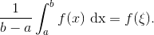
Definiția CI35: Valoarea integrală medie
Numărul se numește valoarea integrală medie a funcției pe intervalul .
Interpretarea geometrică a teoremei de medie
Avem următorul grafic:

În graficul de mai sus se poate observa că pentru o funcție pozitivă pe intervalul , în condițiile Teoremei CI34: Teorema de medie, există astfel încât aria subgraficului să fie egală cu aria suprafeței dreptunghiulare cu dimensiunile și
Exercițiu rezolvat:
Să se determine valoarea integrală medie și punctul în care se obține valoarea integrală medie pentru funcția
Rezolvare:
Se aplică Teorema CI34: ( Teorema de medie ) funcției continue pe intervalul
Atunci, există astfel încât:
![\begin{align*} f(\xi)&=\frac{1}{\sqrt{3}-1}\int_{1}^{\sqrt{3}}\frac{1}{\sqrt{4-x^2}}\ \mathrm{dx}\\\\ &=\frac{1}{\sqrt{3}-1}\cdot \arcsin \ \frac{x}{2}\Big|_1^{\sqrt{3}}\\\\ &=\frac{1}{\sqrt{3}-1}\cdot \left (\arcsin \ \frac{\sqrt{3}}{2}-\arcsin \ \frac{1}{2} \right )\\\\ &=\frac{1}{\sqrt{3}-1}\cdot \left ( \frac{\pi}{3}-\frac{\pi}{2} \right )\\\\ &=\frac{1}{\sqrt{3}-1}\cdot \frac{2\pi-\pi}{6}\\\\ &=\frac{1}{\sqrt{3}-1}\cdot \frac{\pi}{6}\\\\ &=\frac{\pi\left ( \sqrt{3}+1 \right )}{6\cdot (\sqrt{3}-1)(\sqrt{3}+1)}\\\\ &=\frac{\pi\left ( \sqrt{3}+1 \right )}{6\cdot (3-1)}\\\\ &=\frac{\pi\left ( \sqrt{3}+1 \right )}{6\cdot 2}\\\\ &=\frac{\pi}{12}\cdot (\sqrt{3}+1)\\\\ \end{align*}](../media/webbooks/404/2692/images/equations/gbo4rcyecp_z4bcyntwylw==.gif)
Numărul se poate calcula din ecuația și obținem că:
![\begin{align*} & f(\xi)=\frac{\pi}{12}\cdot (\sqrt{3}+1) \\\\ &\Leftrightarrow \frac{1}{\sqrt{4-\xi ^2}}=\frac{\pi}{12}\cdot (\sqrt{3}+1)\\\\ &\Leftrightarrow \sqrt{4-\xi ^2}=\frac{1}{\displaystyle\frac{\pi}{12}\cdot (\sqrt{3}+1)}\\\\ &\Leftrightarrow \sqrt{4-\xi ^2}=\frac{12}{\pi\cdot (\sqrt{3}+1)}\ \Big|^2\\\\ &\Leftrightarrow 4-\xi ^2=\frac{12^2}{\pi^2\cdot (\sqrt{3}+1)^2}\\\\ &\Leftrightarrow \xi ^2=4-\frac{144}{\pi^2\cdot (\sqrt{3}+1)^2}\\\\ &\Leftrightarrow \xi ^2=\frac{4\cdot\pi^2\cdot (\sqrt{3}+1)^2- 144}{\pi^2\cdot (\sqrt{3}+1)^2}\\\\ &\Leftrightarrow \xi =\sqrt{\frac{4\cdot\pi^2\cdot (\sqrt{3}+1)^2- 144}{\pi^2\cdot (\sqrt{3}+1)^2}}\\\\ &\Leftrightarrow \xi =\frac{2}{\pi\cdot (\sqrt{3}+1)}\cdot \sqrt{\pi^2\cdot (\sqrt{3}+1)^2- 36}\in\left [ 1,\sqrt{3} \right ]. \end{align*}](../media/webbooks/404/2692/images/equations/n6-v_4rzydpdbxcpqxd4cg==.gif)
Teorema de existență a primitivelor unei funcții continue
Teorema CI36: Existența primitivelor unei funcții continue
Fie funcția continuă .
Atunci, funcția cu ![x\in\left [ a,b \right ]](../media/webbooks/404/2692/images/equations/aqlzy1qsboslmq4tvpirhg==.gif) , este o primitivă a funcției , care se anulează în punctul
, este o primitivă a funcției , care se anulează în punctul
Exercițiu rezolvat:
Să se verifice egalitatea fără a calcula integrala.
Rezolvare:
Fie funcția
Funcția este continuă pe intervalul ![\left [ -1,1 \right ]](../media/webbooks/404/2692/images/equations/ola2-ykit5c2cstdhxjuda==.gif) , de unde ne rezultă că funcția admite primitive.
, de unde ne rezultă că funcția admite primitive.
Fie funcția  o primitivă a funcției . Funcția este o funcție derivabilă și astfel avem relațiile: și 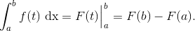
o primitivă a funcției . Funcția este o funcție derivabilă și astfel avem relațiile: și 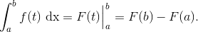
Atunci:
Derivăm această relație și obținem: